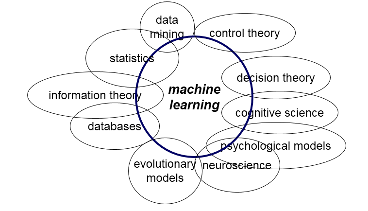

<!DOCTYPE html>
<html lang="zh">
<head><meta name="generator" content="Hexo 3.8.0">
    <meta charset="utf-8">
    
    <title>机器学习_算法汇总 | FEI&#39;s Blog</title>
    
    
        <meta name="keywords" content="ML">
    
    <meta name="viewport" content="width=device-width, initial-scale=1, maximum-scale=1">
    <meta name="description" content="机器学习是人工智能的一个分支,机器学习是实现人工智能的一个途径，即以机器学习为手段解决人工智能中的问题。机器学习算法是一类从数据中自动分析获得规律，并利用规律对未知数据进行预测的算法.机器学习已广泛应用于数据挖掘、计算机视觉、自然语言处理、生物特征识别、搜索引擎、医学诊断、检测信用卡欺诈、证券市场分析、DNA序列测序、语音和手写识别、战略游戏和机器人等领域。本文主要介绍机器学习的基础算法和一些适用">
<meta name="keywords" content="ML">
<meta property="og:type" content="article">
<meta property="og:title" content="机器学习_算法汇总">
<meta property="og:url" content="http://ff120.github.io/hexoblog/2017/05/15/技术/机器学习/机器学习_算法汇总/index.html">
<meta property="og:site_name" content="FEI&#39;s Blog">
<meta property="og:description" content="机器学习是人工智能的一个分支,机器学习是实现人工智能的一个途径，即以机器学习为手段解决人工智能中的问题。机器学习算法是一类从数据中自动分析获得规律，并利用规律对未知数据进行预测的算法.机器学习已广泛应用于数据挖掘、计算机视觉、自然语言处理、生物特征识别、搜索引擎、医学诊断、检测信用卡欺诈、证券市场分析、DNA序列测序、语音和手写识别、战略游戏和机器人等领域。本文主要介绍机器学习的基础算法和一些适用">
<meta property="og:locale" content="zh-Hans">
<meta property="og:image" content="http://ff120.github.io/hexoblog/2017/05/15/技术/机器学习/机器学习_算法汇总/QQ截图20170515230814.png">
<meta property="og:image" content="http://ff120.github.io/hexoblog/2017/05/15/技术/机器学习/机器学习_算法汇总/MachineLearningAlgorithms.png">
<meta property="og:image" content="http://ff120.github.io/hexoblog/2017/05/15/技术/机器学习/机器学习_算法汇总/ml_map.png">
<meta property="og:updated_time" content="2019-03-28T00:54:58.202Z">
<meta name="twitter:card" content="summary">
<meta name="twitter:title" content="机器学习_算法汇总">
<meta name="twitter:description" content="机器学习是人工智能的一个分支,机器学习是实现人工智能的一个途径，即以机器学习为手段解决人工智能中的问题。机器学习算法是一类从数据中自动分析获得规律，并利用规律对未知数据进行预测的算法.机器学习已广泛应用于数据挖掘、计算机视觉、自然语言处理、生物特征识别、搜索引擎、医学诊断、检测信用卡欺诈、证券市场分析、DNA序列测序、语音和手写识别、战略游戏和机器人等领域。本文主要介绍机器学习的基础算法和一些适用">
<meta name="twitter:image" content="http://ff120.github.io/hexoblog/2017/05/15/技术/机器学习/机器学习_算法汇总/QQ截图20170515230814.png">
    

    
        <link rel="alternate" href="/atom.xml" title="FEI&#39;s Blog" type="application/atom+xml">
    

    
        <link rel="icon" href="/hexoblog/favicon.ico">
    

    <link rel="stylesheet" href="/hexoblog/libs/font-awesome/css/font-awesome.min.css">
    <link rel="stylesheet" href="/hexoblog/libs/open-sans/styles.css">
    <link rel="stylesheet" href="/hexoblog/libs/source-code-pro/styles.css">

    <link rel="stylesheet" href="/hexoblog/css/style.css">
    <script src="/hexoblog/libs/jquery/2.1.3/jquery.min.js"></script>
    <script src="/hexoblog/libs/jquery/plugins/cookie/1.4.1/jquery.cookie.js"></script>
    
    
        <link rel="stylesheet" href="/hexoblog/libs/lightgallery/css/lightgallery.min.css">
    
    
        <link rel="stylesheet" href="/hexoblog/libs/justified-gallery/justifiedGallery.min.css">
    
    
    
    


    
        <script async src="//busuanzi.ibruce.info/busuanzi/2.3/busuanzi.pure.mini.js"></script>
    
</head>
</html>
<body>
    <div id="container">
        <header id="header">
    <div id="header-main" class="header-inner">
        <div class="outer">
            <a href="/hexoblog/" id="logo">
                <i class="logo"></i>
                <span class="site-title">FEI&#39;s Blog</span>
            </a>
            <nav id="main-nav">
                
                    <a class="main-nav-link" href="/hexoblog/">首页</a>
                
                    <a class="main-nav-link" href="/hexoblog/archives">归档</a>
                
                    <a class="main-nav-link" href="/hexoblog/categories">分类</a>
                
                    <a class="main-nav-link" href="/hexoblog/tags">标签</a>
                
                    <a class="main-nav-link" href="/hexoblog/about">关于</a>
                
            </nav>
            
            <div id="search-form-wrap">

    <form class="search-form">
        <input type="text" class="ins-search-input search-form-input" placeholder="Rechercher">
        <button type="submit" class="search-form-submit"></button>
    </form>
    <div class="ins-search">
    <div class="ins-search-mask"></div>
    <div class="ins-search-container">
        <div class="ins-input-wrapper">
            <input type="text" class="ins-search-input" placeholder="Type something...">
            <span class="ins-close ins-selectable"><i class="fa fa-times-circle"></i></span>
        </div>
        <div class="ins-section-wrapper">
            <div class="ins-section-container"></div>
        </div>
    </div>
</div>
<script>
(function (window) {
    var INSIGHT_CONFIG = {
        TRANSLATION: {
            POSTS: 'Articles',
            PAGES: 'Pages',
            CATEGORIES: 'Catégories',
            TAGS: 'Tags',
            UNTITLED: '(Untitled)',
        },
        ROOT_URL: '/hexoblog/',
        CONTENT_URL: '/hexoblog/content.json',
    };
    window.INSIGHT_CONFIG = INSIGHT_CONFIG;
})(window);
</script>
<script src="/hexoblog/js/insight.js"></script>

</div>
        </div>
    </div>
    <div id="main-nav-mobile" class="header-sub header-inner">
        <table class="menu outer">
            <tr>
                
                    <td><a class="main-nav-link" href="/hexoblog/">首页</a></td>
                
                    <td><a class="main-nav-link" href="/hexoblog/archives">归档</a></td>
                
                    <td><a class="main-nav-link" href="/hexoblog/categories">分类</a></td>
                
                    <td><a class="main-nav-link" href="/hexoblog/tags">标签</a></td>
                
                    <td><a class="main-nav-link" href="/hexoblog/about">关于</a></td>
                
                <td>
                    
    <div class="search-form">
        <input type="text" class="ins-search-input search-form-input" placeholder="Rechercher">
    </div>

                </td>
            </tr>
        </table>
    </div>
</header>

        <div class="outer">
            
            
                <aside id="sidebar">
   
        
    <div class="widget-wrap" id="categories">
        <h3 class="widget-title">
            <span>Catégories</span>
            &nbsp;
            <a id="allExpand" href="#">
                <i class="fa fa-angle-double-down fa-2x"></i>
            </a>
        </h3>
        
        
        
         <ul class="unstyled" id="tree"> 
                    <li class="directory">
                        <a href="#" data-role="directory">
                            <i class="fa fa-folder"></i>
                            &nbsp;
                            心理学
                        </a>
                         <ul class="unstyled" id="tree"> 
                    <li class="directory">
                        <a href="#" data-role="directory">
                            <i class="fa fa-folder"></i>
                            &nbsp;
                            记忆魔法
                        </a>
                         <ul class="unstyled" id="tree">  <li class="file"><a href="/hexoblog/2019/04/03/心理学/记忆魔法/代码记忆法/">代码记忆法</a></li>  </ul> 
                    </li> 
                     </ul> 
                    </li> 
                    
                    <li class="directory open">
                        <a href="#" data-role="directory">
                            <i class="fa fa-folder-open"></i>
                            &nbsp;
                            技术
                        </a>
                         <ul class="unstyled" id="tree"> 
                    <li class="directory">
                        <a href="#" data-role="directory">
                            <i class="fa fa-folder"></i>
                            &nbsp;
                            Web开发
                        </a>
                         <ul class="unstyled" id="tree">  <li class="file"><a href="/hexoblog/2016/06/11/技术/Web开发/后台开发_How-to-install-Laravel-framework/">How to install Laravel framework</a></li>  <li class="file"><a href="/hexoblog/2016/06/11/技术/Web开发/后台开发_laravel-4-note-01/">laravel 4 note 01</a></li>  <li class="file"><a href="/hexoblog/2016/06/11/技术/Web开发/后台开发_Make-phpStorm-friendly-to-laravel/">Make phpStorm friendly to laravel</a></li>  <li class="file"><a href="/hexoblog/2016/06/11/技术/Web开发/后台开发_sublime-Text-tricks/">sublime Text tricks</a></li>  <li class="file"><a href="/hexoblog/2016/06/11/技术/Web开发/后台开发_think-php-note-01/">think php note 01</a></li>  <li class="file"><a href="/hexoblog/2016/06/11/技术/Web开发/后台开发_think-php-note-02/">think php note 02</a></li>  <li class="file"><a href="/hexoblog/2016/06/11/技术/Web开发/后台开发_think-php-note-03/">think php note 03</a></li>  <li class="file"><a href="/hexoblog/2016/06/11/技术/Web开发/后台开发_PHP编译less文件-lessphp的使用/">PHP编译less文件-lessphp的使用</a></li>  <li class="file"><a href="/hexoblog/2016/06/11/技术/Web开发/后台开发_Lavarel-后台组件frozenode的使用/">Lavarel 后台组件frozenode的使用</a></li>  <li class="file"><a href="/hexoblog/2016/06/11/技术/Web开发/后台开发_Linux常用命令/">Linux常用命令</a></li>  <li class="file"><a href="/hexoblog/2016/06/11/技术/Web开发/后台开发_Linux主机之间同步文件/">Linux主机之间同步文件</a></li>  <li class="file"><a href="/hexoblog/2016/06/11/技术/Web开发/后台开发_PHP基本操作/">PHP基本操作</a></li>  <li class="file"><a href="/hexoblog/2016/06/11/技术/Web开发/后台开发_短信验证码的实现/">短信验证码的实现</a></li>  <li class="file"><a href="/hexoblog/2016/06/11/技术/Web开发/后台开发_配置Apache支持使用HTTPS/">配置Apache支持使用HTTPS</a></li>  <li class="file"><a href="/hexoblog/2016/06/11/技术/Web开发/测试_使用Selenium测试UI/">测试_使用Selenium测试UI</a></li>  <li class="file"><a href="/hexoblog/2016/06/11/技术/Web开发/后台开发_PhpStorm常用快捷键/">PhpStorm常用快捷键</a></li>  <li class="file"><a href="/hexoblog/2016/06/11/技术/Web开发/微信开发_微信发送消息PHP-SDK/">微信发送消息PHP SDK</a></li>  <li class="file"><a href="/hexoblog/2016/06/11/技术/Web开发/微信开发_获取地理位置/">微信获取地理位置 </a></li>  <li class="file"><a href="/hexoblog/2016/06/11/技术/Web开发/微信开发_发送模板消息的代码/">微信发送模板消息的代码</a></li>  <li class="file"><a href="/hexoblog/2016/06/11/技术/Web开发/测试_Selenium-定位元素的几种方式/">测试_Selenium定位元素的几种方式</a></li>  <li class="file"><a href="/hexoblog/2016/06/11/技术/Web开发/测试_Selenium-Action/">测试_Selenium Action</a></li>  <li class="file"><a href="/hexoblog/2016/06/11/技术/Web开发/测试_Apache-JMeter的使用/">测试_Apache JMeter的使用</a></li>  <li class="file"><a href="/hexoblog/2016/06/12/技术/Web开发/后台开发_Apache-配置虚拟主机/">Apache 配置虚拟主机</a></li>  <li class="file"><a href="/hexoblog/2016/06/23/技术/Web开发/后台开发_改进PHP的var-dump-方法使之适应显示从数据库中查出来的数据/">改进PHP的var_dump()方法使之适应显示从数据库中查出来的数据</a></li>  <li class="file"><a href="/hexoblog/2016/06/23/技术/Web开发/后台开发_PHP读写XLS/">PHP读写XLS</a></li>  <li class="file"><a href="/hexoblog/2016/06/30/技术/Web开发/前端_jQuery-EasyUI-学习笔记/">JQuery EasyUI 学习笔记</a></li>  <li class="file"><a href="/hexoblog/2016/06/30/技术/Web开发/前端_bootsharp学习笔记/">Bootsharp学习笔记</a></li>  </ul> 
                    </li> 
                    
                    <li class="directory">
                        <a href="#" data-role="directory">
                            <i class="fa fa-folder"></i>
                            &nbsp;
                            专业术语
                        </a>
                         <ul class="unstyled" id="tree">  <li class="file"><a href="/hexoblog/2017/07/24/技术/专业术语/术语/">英语</a></li>  </ul> 
                    </li> 
                    
                    <li class="directory">
                        <a href="#" data-role="directory">
                            <i class="fa fa-folder"></i>
                            &nbsp;
                            大数据
                        </a>
                         <ul class="unstyled" id="tree">  <li class="file"><a href="/hexoblog/2016/06/23/技术/大数据/大数据_Spark环境下的Kmeans-Python实现/">Spark环境下的Kmeans-Python实现</a></li>  <li class="file"><a href="/hexoblog/2017/10/06/技术/大数据/大数据基础框架/">大数据基础框架</a></li>  </ul> 
                    </li> 
                    
                    <li class="directory">
                        <a href="#" data-role="directory">
                            <i class="fa fa-folder"></i>
                            &nbsp;
                            工具
                        </a>
                         <ul class="unstyled" id="tree"> 
                    <li class="directory">
                        <a href="#" data-role="directory">
                            <i class="fa fa-folder"></i>
                            &nbsp;
                            AutoHotKey
                        </a>
                         <ul class="unstyled" id="tree">  <li class="file"><a href="/hexoblog/2018/12/02/技术/工具/AutoHotKey/AutoHotKey非常有用的脚本/">AutoHotKey非常有用的脚本</a></li>  </ul> 
                    </li> 
                    
                    <li class="directory">
                        <a href="#" data-role="directory">
                            <i class="fa fa-folder"></i>
                            &nbsp;
                            Git
                        </a>
                         <ul class="unstyled" id="tree">  <li class="file"><a href="/hexoblog/2017/05/04/技术/工具/Git/GIT的使用01-基本功能/">GIT的使用01-基本功能</a></li>  <li class="file"><a href="/hexoblog/2018/07/29/技术/工具/Git/Git查询手册/">Git 手册</a></li>  </ul> 
                    </li> 
                    
                    <li class="directory">
                        <a href="#" data-role="directory">
                            <i class="fa fa-folder"></i>
                            &nbsp;
                            Hexo
                        </a>
                         <ul class="unstyled" id="tree">  <li class="file"><a href="/hexoblog/2016/06/12/技术/工具/Hexo/Hexo的使用02-同步/">Hexo的使用02-同步</a></li>  <li class="file"><a href="/hexoblog/2016/06/13/技术/工具/Hexo/Hexo的使用01-搭建/">Hexo的使用01-搭建</a></li>  <li class="file"><a href="/hexoblog/2017/04/12/技术/工具/Hexo/Hexo的使用05-Atom编辑器/">Hexo的使用05-Atom编辑器</a></li>  <li class="file"><a href="/hexoblog/2017/04/12/技术/工具/Hexo/Hexo的使用04-数学公式/">Hexo的使用04-数学公式</a></li>  <li class="file"><a href="/hexoblog/2017/05/05/技术/工具/Hexo/Hexo的使用03-迁移/">Hexo的使用03-迁移</a></li>  <li class="file"><a href="/hexoblog/2017/07/17/技术/工具/Hexo/Hexo的使用06-使用gist存储代码片段/">Hexo中使用gist存储代码片段</a></li>  </ul> 
                    </li> 
                    
                    <li class="directory">
                        <a href="#" data-role="directory">
                            <i class="fa fa-folder"></i>
                            &nbsp;
                            Visio
                        </a>
                         <ul class="unstyled" id="tree">  <li class="file"><a href="/hexoblog/2017/05/05/技术/工具/Visio/VISIO的使用01-基础入门/">VISIO的使用01-基础入门</a></li>  </ul> 
                    </li> 
                    
                    <li class="directory">
                        <a href="#" data-role="directory">
                            <i class="fa fa-folder"></i>
                            &nbsp;
                            图片处理
                        </a>
                         <ul class="unstyled" id="tree">  <li class="file"><a href="/hexoblog/2017/05/05/技术/工具/图片处理/图片处理02-一寸照片/">图片处理02-一寸照片</a></li>  <li class="file"><a href="/hexoblog/2017/05/17/技术/工具/图片处理/图片处理01-合并多张图片/">图片处理01-合并多张图片</a></li>  </ul> 
                    </li> 
                    
                    <li class="directory">
                        <a href="#" data-role="directory">
                            <i class="fa fa-folder"></i>
                            &nbsp;
                            正则表达式
                        </a>
                         <ul class="unstyled" id="tree">  <li class="file"><a href="/hexoblog/2018/07/29/技术/工具/正则表达式/正则表达式/">正则表达式</a></li>  </ul> 
                    </li> 
                    
                    <li class="directory">
                        <a href="#" data-role="directory">
                            <i class="fa fa-folder"></i>
                            &nbsp;
                            编程IDE
                        </a>
                         <ul class="unstyled" id="tree"> 
                    <li class="directory">
                        <a href="#" data-role="directory">
                            <i class="fa fa-folder"></i>
                            &nbsp;
                            Anaconda
                        </a>
                         <ul class="unstyled" id="tree">  <li class="file"><a href="/hexoblog/2017/04/18/技术/工具/编程IDE/Anaconda/Anaconda的使用01-基础/">Anaconda的使用01-基础</a></li>  </ul> 
                    </li> 
                    
                    <li class="directory">
                        <a href="#" data-role="directory">
                            <i class="fa fa-folder"></i>
                            &nbsp;
                            JetBrainsCLion
                        </a>
                         <ul class="unstyled" id="tree">  <li class="file"><a href="/hexoblog/2017/05/04/技术/工具/编程IDE/JetBrainsCLion/JetBrainsCLion的使用01-入门/">JetBrainsCLion的使用01-入门</a></li>  </ul> 
                    </li> 
                    
                    <li class="directory">
                        <a href="#" data-role="directory">
                            <i class="fa fa-folder"></i>
                            &nbsp;
                            VSCode
                        </a>
                         <ul class="unstyled" id="tree">  <li class="file"><a href="/hexoblog/2017/07/24/技术/工具/编程IDE/VSCode/Visual-Studio-Code使用技巧/">Visual Studio Code使用技巧</a></li>  </ul> 
                    </li> 
                     </ul> 
                    </li> 
                    
                    <li class="directory">
                        <a href="#" data-role="directory">
                            <i class="fa fa-folder"></i>
                            &nbsp;
                            网络软件
                        </a>
                         <ul class="unstyled" id="tree">  <li class="file"><a href="/hexoblog/2016/06/12/技术/工具/网络软件/Windows全局代理软件Proxifier/">Windows全局代理软件Proxifier</a></li>  <li class="file"><a href="/hexoblog/2016/06/12/技术/工具/网络软件/Windows手工修改路由表/">Windows手工修改路由表</a></li>  </ul> 
                    </li> 
                     </ul> 
                    </li> 
                    
                    <li class="directory">
                        <a href="#" data-role="directory">
                            <i class="fa fa-folder"></i>
                            &nbsp;
                            数据库
                        </a>
                         <ul class="unstyled" id="tree">  <li class="file"><a href="/hexoblog/2016/06/11/技术/数据库/数据库_Redis入门/">Redis入门</a></li>  <li class="file"><a href="/hexoblog/2016/06/12/技术/数据库/数据库_使用Database-Configuration-Assist-工具创建oracle数据库/">使用Database Configuration Assist 工具创建oracle数据库</a></li>  <li class="file"><a href="/hexoblog/2017/11/02/技术/数据库/SQL/">SQL</a></li>  </ul> 
                    </li> 
                    
                    <li class="directory">
                        <a href="#" data-role="directory">
                            <i class="fa fa-folder"></i>
                            &nbsp;
                            数据结构和算法
                        </a>
                         <ul class="unstyled" id="tree">  <li class="file"><a href="/hexoblog/2017/03/21/技术/数据结构和算法/算法专题_二维数组/">算法专题_二维数组</a></li>  <li class="file"><a href="/hexoblog/2017/03/21/技术/数据结构和算法/算法专题_矩阵和图/">矩阵和用矩阵表示的图的相关问题</a></li>  <li class="file"><a href="/hexoblog/2017/03/21/技术/数据结构和算法/算法专题_位运算/">算法专题_位运算</a></li>  <li class="file"><a href="/hexoblog/2017/03/23/技术/数据结构和算法/算法专题_链表/">算法专题_链表</a></li>  <li class="file"><a href="/hexoblog/2017/04/05/技术/数据结构和算法/算法专题_动态规划/">算法专题_动态规划</a></li>  <li class="file"><a href="/hexoblog/2017/04/06/技术/数据结构和算法/算法专题_图/">算法专题_图问题</a></li>  <li class="file"><a href="/hexoblog/2017/04/08/技术/数据结构和算法/做过的算法题汇总表/">做过的算法题汇总表</a></li>  <li class="file"><a href="/hexoblog/2017/04/09/技术/数据结构和算法/算法专题_二叉树/">算法专题_二叉树</a></li>  <li class="file"><a href="/hexoblog/2017/04/09/技术/数据结构和算法/算法专题_通用树结构/">算法专题_通用树结构</a></li>  <li class="file"><a href="/hexoblog/2017/04/10/技术/数据结构和算法/算法专题_大数据和空间限制/">算法专题_大数据和空间限制</a></li>  <li class="file"><a href="/hexoblog/2017/04/10/技术/数据结构和算法/算法专题_排列组合/">算法专题_排列组合</a></li>  <li class="file"><a href="/hexoblog/2017/04/11/技术/数据结构和算法/本地代码集锦/">本地代码集锦</a></li>  <li class="file"><a href="/hexoblog/2017/04/12/技术/数据结构和算法/算法专题_栈和队列/">算法专题_栈和队列</a></li>  <li class="file"><a href="/hexoblog/2017/04/16/技术/数据结构和算法/算法专题_排序算法/">算法专题_排序算法</a></li>  <li class="file"><a href="/hexoblog/2017/04/17/技术/数据结构和算法/算法专题_算法总结/">算法专题_算法总结</a></li>  <li class="file"><a href="/hexoblog/2017/05/02/技术/数据结构和算法/算法专题_一维数组/">算法专题_一维数组</a></li>  <li class="file"><a href="/hexoblog/2017/05/05/技术/数据结构和算法/算法专题_图之网络流/">算法专题_图之网络流</a></li>  <li class="file"><a href="/hexoblog/2017/05/06/技术/数据结构和算法/算法专题_图之最短路径/">算法专题_图之最短路径</a></li>  <li class="file"><a href="/hexoblog/2017/05/06/技术/数据结构和算法/算法专题_最小生成树/">算法专题_最小生成树</a></li>  <li class="file"><a href="/hexoblog/2017/05/06/技术/数据结构和算法/算法专题_霍夫曼编码/">算法专题_霍夫曼编码(哈夫曼编码)</a></li>  <li class="file"><a href="/hexoblog/2017/05/07/技术/数据结构和算法/Kickstart-Round-B-2017/">Kickstart Round B 2017</a></li>  <li class="file"><a href="/hexoblog/2017/05/08/技术/数据结构和算法/算法专题_模运算/">算法专题_模运算</a></li>  <li class="file"><a href="/hexoblog/2017/05/09/技术/数据结构和算法/算法专题_素数问题/">算法专题_素数问题</a></li>  <li class="file"><a href="/hexoblog/2017/05/11/技术/数据结构和算法/算法专题_计算几何/">算法专题_计算几何</a></li>  <li class="file"><a href="/hexoblog/2017/05/27/技术/数据结构和算法/计蒜之道2017程序设计大赛/">计蒜之道2017程序设计大赛</a></li>  <li class="file"><a href="/hexoblog/2017/05/28/技术/数据结构和算法/算法专题_字符串匹配/">算法专题_字符串匹配</a></li>  <li class="file"><a href="/hexoblog/2017/07/12/技术/数据结构和算法/四等分数组/">四等分数组</a></li>  <li class="file"><a href="/hexoblog/2017/07/12/技术/数据结构和算法/矩阵的遍历/">矩阵的遍历</a></li>  <li class="file"><a href="/hexoblog/2017/07/20/技术/数据结构和算法/N皇后问题/">N皇后问题</a></li>  <li class="file"><a href="/hexoblog/2017/07/23/技术/数据结构和算法/算法专题_线段树/">算法专题_线段树</a></li>  <li class="file"><a href="/hexoblog/2017/07/23/技术/数据结构和算法/算法专题_树状数组/">算法专题_树状数组</a></li>  <li class="file"><a href="/hexoblog/2017/07/23/技术/数据结构和算法/算法专题_并查集/">算法专题_并查集</a></li>  <li class="file"><a href="/hexoblog/2017/07/26/技术/数据结构和算法/算法专题_链表2/">算法专题_链表2</a></li>  <li class="file"><a href="/hexoblog/2017/08/06/技术/数据结构和算法/算法专题_二叉堆/">算法专题_二叉堆</a></li>  <li class="file"><a href="/hexoblog/2017/08/07/技术/数据结构和算法/算法专题_快速排序/">算法专题_快速排序</a></li>  <li class="file"><a href="/hexoblog/2017/08/07/技术/数据结构和算法/算法专题_归并排序/">算法专题_归并排序</a></li>  <li class="file"><a href="/hexoblog/2017/08/13/技术/数据结构和算法/算法专题-hihocoder/">算法专题_hihocoder</a></li>  <li class="file"><a href="/hexoblog/2017/08/17/技术/数据结构和算法/算法专题-贪心法/">算法专题_贪心法</a></li>  <li class="file"><a href="/hexoblog/2017/08/18/技术/数据结构和算法/阿里在线测评-兔子繁殖问题/">阿里笔试</a></li>  <li class="file"><a href="/hexoblog/2017/08/22/技术/数据结构和算法/今日头条-在线编程题/">今日头条_在线编程题</a></li>  <li class="file"><a href="/hexoblog/2017/08/23/技术/数据结构和算法/算法专题-字典树-Trie树/">算法专题_字典树(Trie树)</a></li>  <li class="file"><a href="/hexoblog/2017/09/23/技术/数据结构和算法/算法专题_二叉树2/">算法专题_二叉树2</a></li>  <li class="file"><a href="/hexoblog/2017/09/27/技术/数据结构和算法/手写代码-其他/">手写代码-其他</a></li>  <li class="file"><a href="/hexoblog/2017/10/03/技术/数据结构和算法/算法专题-常见题目/">算法专题_常见题目</a></li>  </ul> 
                    </li> 
                    
                    <li class="directory open">
                        <a href="#" data-role="directory">
                            <i class="fa fa-folder-open"></i>
                            &nbsp;
                            机器学习
                        </a>
                         <ul class="unstyled" id="tree"> 
                    <li class="directory">
                        <a href="#" data-role="directory">
                            <i class="fa fa-folder"></i>
                            &nbsp;
                            深度学习
                        </a>
                         <ul class="unstyled" id="tree">  <li class="file"><a href="/hexoblog/2017/03/22/技术/机器学习/深度学习/深度学习_Theano使用技巧/">深度学习_Theano使用技巧</a></li>  <li class="file"><a href="/hexoblog/2017/04/18/技术/机器学习/深度学习/深度学习_基本概念/">深度学习_基本概念</a></li>  <li class="file"><a href="/hexoblog/2017/04/18/技术/机器学习/深度学习/深度学习_利用神经网络识别手写数字/">深度学习__利用神经网络识别手写数字</a></li>  <li class="file"><a href="/hexoblog/2017/04/19/技术/机器学习/深度学习/深度学习_反向传播算法及简单实例/">深度学习_反向传播算法及简单实例</a></li>  <li class="file"><a href="/hexoblog/2017/04/19/技术/机器学习/深度学习/深度学习_Keras使用技巧/">深度学习_Keras使用技巧</a></li>  <li class="file"><a href="/hexoblog/2017/04/20/技术/机器学习/深度学习/深度学习_使用keras实现autoencoder/">深度学习_使用keras实现autoencoder</a></li>  <li class="file"><a href="/hexoblog/2017/04/20/技术/机器学习/深度学习/深度学习_卷积神经网络/">深度学习_卷积神经网络</a></li>  <li class="file"><a href="/hexoblog/2017/04/27/技术/机器学习/深度学习/深度学习_使用autoencoder自动提取特征/">深度学习_使用autoencoder自动提取特征</a></li>  <li class="file"><a href="/hexoblog/2017/05/10/技术/机器学习/深度学习/深度学习_递归神经网络(RNN)/">深度学习_递归神经网络(RNN)</a></li>  <li class="file"><a href="/hexoblog/2017/05/10/技术/机器学习/深度学习/深度学习_限制波尔茨曼向量机(RBM)/">深度学习_限制波尔茨曼向量机(RBM)</a></li>  <li class="file"><a href="/hexoblog/2017/05/12/技术/机器学习/深度学习/深度学习_TensorFlow使用技巧/">深度学习_TensorFlow使用技巧</a></li>  </ul> 
                    </li> 
                     <li class="file"><a href="/hexoblog/2016/06/16/技术/机器学习/机器学习_Scikit-Learn-ManyClassifier/">同时使用多个分类器(Scikit-Learn)</a></li>  <li class="file"><a href="/hexoblog/2016/06/16/技术/机器学习/机器学习_范数/">机器学习_范数</a></li>  <li class="file"><a href="/hexoblog/2016/06/20/技术/机器学习/机器学习_学习路线/">机器学习_学习路线</a></li>  <li class="file"><a href="/hexoblog/2016/06/20/技术/机器学习/机器学习_手写数字识别/">机器学习_手写数字识别</a></li>  <li class="file"><a href="/hexoblog/2016/07/11/技术/机器学习/机器学习_Matplolib使用技巧/">机器学习_Matplolib使用技巧</a></li>  <li class="file"><a href="/hexoblog/2017/03/22/技术/机器学习/机器学习_人脸识别/">机器学习_人脸识别</a></li>  <li class="file"><a href="/hexoblog/2017/05/04/技术/机器学习/机器学习_Matlab使用技巧/">机器学习_Matlab使用技巧</a></li>  <li class="file"><a href="/hexoblog/2017/05/11/技术/机器学习/机器学习_时间序列预测分析算法/">机器学习_时间序列预测分析算法</a></li>  <li class="file"><a href="/hexoblog/2017/05/14/技术/机器学习/机器学习_Scikit-Learn使用技巧/">深度学习_Scikit-Learn机器学习算法的使用</a></li>  <li class="file"><a href="/hexoblog/2017/05/15/技术/机器学习/机器学习_时间序列预测の广告效果预测/">机器学习_时间序列预测の广告效果预测</a></li>  <li class="file active"><a href="/hexoblog/2017/05/15/技术/机器学习/机器学习_算法汇总/">机器学习_算法汇总</a></li>  <li class="file"><a href="/hexoblog/2017/05/17/技术/机器学习/机器学习_Pandas使用技巧/">深度学习_Pandas使用技巧</a></li>  <li class="file"><a href="/hexoblog/2017/05/19/技术/机器学习/机器学习_感知机/">机器学习_感知机</a></li>  <li class="file"><a href="/hexoblog/2017/05/19/技术/机器学习/机器学习_逻辑回归/">机器学习_逻辑回归</a></li>  <li class="file"><a href="/hexoblog/2017/05/22/技术/机器学习/机器学习_损失函数/">机器学习_损失函数</a></li>  <li class="file"><a href="/hexoblog/2017/06/03/技术/机器学习/机器学习_分类器性能的度量/">机器学习_分类器性能的度量</a></li>  <li class="file"><a href="/hexoblog/2017/06/15/技术/机器学习/机器学习_Scipy使用技巧/">机器学习_Scipy使用技巧</a></li>  <li class="file"><a href="/hexoblog/2017/06/15/技术/机器学习/机器学习_Python使用技巧/">深度学习_Python使用技巧</a></li>  <li class="file"><a href="/hexoblog/2017/07/23/技术/机器学习/机器学习-Numpy使用技巧/">机器学习_Numpy使用技巧</a></li>  <li class="file"><a href="/hexoblog/2017/10/15/技术/机器学习/KNN-with-C/">KNN with C++</a></li>  <li class="file"><a href="/hexoblog/2017/11/04/技术/机器学习/机器学习-绪论-基本概念/">机器学习-绪论-基本概念</a></li>  <li class="file"><a href="/hexoblog/2017/11/04/技术/机器学习/机器学习-第一章-逻辑回归/">机器学习-第一章-逻辑回归</a></li>  <li class="file"><a href="/hexoblog/2017/11/04/技术/机器学习/机器学习-第二章-决策树/">机器学习-第二章-决策树</a></li>  <li class="file"><a href="/hexoblog/2017/11/04/技术/机器学习/机器学习-第三章-朴素贝叶斯/">机器学习-第三章-朴素贝叶斯</a></li>  <li class="file"><a href="/hexoblog/2017/11/04/技术/机器学习/机器学习-第四章-支持向量机/">机器学习-第四章-支持向量机</a></li>  <li class="file"><a href="/hexoblog/2017/11/04/技术/机器学习/机器学习-第五章-最近邻/">机器学习-第五章-最近邻</a></li>  <li class="file"><a href="/hexoblog/2017/11/04/技术/机器学习/机器学习-第六章-kmeans/">机器学习-第六章-kmeans</a></li>  <li class="file"><a href="/hexoblog/2017/11/04/技术/机器学习/机器学习-第七章-感知机/">机器学习-第七章-感知机</a></li>  </ul> 
                    </li> 
                    
                    <li class="directory">
                        <a href="#" data-role="directory">
                            <i class="fa fa-folder"></i>
                            &nbsp;
                            编程语言
                        </a>
                         <ul class="unstyled" id="tree"> 
                    <li class="directory">
                        <a href="#" data-role="directory">
                            <i class="fa fa-folder"></i>
                            &nbsp;
                            C++
                        </a>
                         <ul class="unstyled" id="tree">  <li class="file"><a href="/hexoblog/2017/04/07/技术/编程语言/C++/C++语言技巧/">C++语言技巧</a></li>  </ul> 
                    </li> 
                     </ul> 
                    </li> 
                    
                    <li class="directory">
                        <a href="#" data-role="directory">
                            <i class="fa fa-folder"></i>
                            &nbsp;
                            计算机基础
                        </a>
                         <ul class="unstyled" id="tree"> 
                    <li class="directory">
                        <a href="#" data-role="directory">
                            <i class="fa fa-folder"></i>
                            &nbsp;
                            计算机网络
                        </a>
                         <ul class="unstyled" id="tree">  <li class="file"><a href="/hexoblog/2016/06/12/技术/计算机基础/计算机网络/网络_校园网多终端上网方案/">校园网多终端上网方案</a></li>  <li class="file"><a href="/hexoblog/2017/07/12/技术/计算机基础/计算机网络/计算机网络/">计算机网络</a></li>  </ul> 
                    </li> 
                     </ul> 
                    </li> 
                    
                    <li class="directory">
                        <a href="#" data-role="directory">
                            <i class="fa fa-folder"></i>
                            &nbsp;
                            认知神经科学
                        </a>
                         <ul class="unstyled" id="tree">  <li class="file"><a href="/hexoblog/2016/06/12/技术/认知神经科学/文献检索方法/">文献检索方法</a></li>  <li class="file"><a href="/hexoblog/2016/06/12/技术/认知神经科学/参考文献书写格式/">参考文献书写格式</a></li>  <li class="file"><a href="/hexoblog/2016/06/12/技术/认知神经科学/使用Python处理fMRI数据/">使用Python处理fMRI数据</a></li>  <li class="file"><a href="/hexoblog/2016/06/22/技术/认知神经科学/中英文对照/">中英文对照</a></li>  <li class="file"><a href="/hexoblog/2017/01/03/技术/认知神经科学/circos入门教程/">circos入门教程</a></li>  <li class="file"><a href="/hexoblog/2017/03/08/技术/认知神经科学/基于视频的车牌识别和流量统计/">基于视频的车牌识别和流量统计</a></li>  <li class="file"><a href="/hexoblog/2017/03/08/技术/认知神经科学/基于贝叶斯网络和隐性知识的AU识别研究/">基于贝叶斯网络和隐性知识的AU识别研究</a></li>  <li class="file"><a href="/hexoblog/2017/03/09/技术/认知神经科学/基于连接的脑信息解码研究/">基于连接信息的脑信息解码研究</a></li>  <li class="file"><a href="/hexoblog/2017/03/09/技术/认知神经科学/认知神经科学系列目录/">认知神经科学系列目录</a></li>  <li class="file"><a href="/hexoblog/2017/03/20/技术/认知神经科学/多被试多RUN批量预处理(SPM)/">多被试多RUN批量预处理(SPM)</a></li>  <li class="file"><a href="/hexoblog/2017/03/20/技术/认知神经科学/SPM预处理中的常用操作/">SPM预处理中的常用操作</a></li>  <li class="file"><a href="/hexoblog/2017/03/20/技术/认知神经科学/动态因果模型(DCM)的批量定义和估计/">动态因果模型(DCM)的批量定义和估计</a></li>  <li class="file"><a href="/hexoblog/2017/04/13/技术/认知神经科学/使用SPM做Second-Level分析/">使用SPM做Second_Level分析</a></li>  <li class="file"><a href="/hexoblog/2017/04/13/技术/认知神经科学/DCM模型的定义和估计/">DCM模型的定义和估计</a></li>  <li class="file"><a href="/hexoblog/2017/04/14/技术/认知神经科学/XJVIEW的使用技巧/">XJVIEW的使用技巧</a></li>  <li class="file"><a href="/hexoblog/2017/04/14/技术/认知神经科学/SPM中函数的修改和使用/">SPM中函数的修改和使用</a></li>  <li class="file"><a href="/hexoblog/2017/05/02/技术/认知神经科学/fMRI中常用的工具包/">fMRI中常用的工具包</a></li>  <li class="file"><a href="/hexoblog/2017/05/11/技术/认知神经科学/使用3D卷积神经神经网络提取脑成像数据的特征/">使用3D卷积神经神经网络提取脑成像数据的特征</a></li>  <li class="file"><a href="/hexoblog/2017/05/14/技术/认知神经科学/fMRI相关的资源汇总/">fMRI相关的资源汇总</a></li>  <li class="file"><a href="/hexoblog/2017/05/30/技术/认知神经科学/fMRI相关问题汇总/">fMRI相关问题汇总</a></li>  </ul> 
                    </li> 
                     </ul> 
                    </li> 
                    
                    <li class="directory">
                        <a href="#" data-role="directory">
                            <i class="fa fa-folder"></i>
                            &nbsp;
                            收藏夹
                        </a>
                         <ul class="unstyled" id="tree">  <li class="file"><a href="/hexoblog/2017/03/22/收藏夹/博客集锦/">博客收藏</a></li>  </ul> 
                    </li> 
                     </ul> 
    </div>
    <script>
        $(document).ready(function() {
            var iconFolderOpenClass  = 'fa-folder-open';
            var iconFolderCloseClass = 'fa-folder';
            var iconAllExpandClass = 'fa-angle-double-down';
            var iconAllPackClass = 'fa-angle-double-up';
            // Handle directory-tree expansion:
            // 左键单独展开目录
            $(document).on('click', '#categories a[data-role="directory"]', function (event) {
                event.preventDefault();

                var icon = $(this).children('.fa');
                var expanded = icon.hasClass(iconFolderOpenClass);
                var subtree = $(this).siblings('ul');
                icon.removeClass(iconFolderOpenClass).removeClass(iconFolderCloseClass);
                if (expanded) {
                    if (typeof subtree != 'undefined') {
                        subtree.slideUp({ duration: 100 });
                    }
                    icon.addClass(iconFolderCloseClass);
                } else {
                    if (typeof subtree != 'undefined') {
                        subtree.slideDown({ duration: 100 });
                    }
                    icon.addClass(iconFolderOpenClass);
                }
            });
            // 右键展开下属所有目录
            $('#categories a[data-role="directory"]').bind("contextmenu", function(event){
                event.preventDefault();
                
                var icon = $(this).children('.fa');
                var expanded = icon.hasClass(iconFolderOpenClass);
                var listNode = $(this).siblings('ul');
                var subtrees = $.merge(listNode.find('li ul'), listNode);
                var icons = $.merge(listNode.find('.fa'), icon);
                icons.removeClass(iconFolderOpenClass).removeClass(iconFolderCloseClass);
                if(expanded) {
                    subtrees.slideUp({ duration: 100 });
                    icons.addClass(iconFolderCloseClass);
                } else {
                    subtrees.slideDown({ duration: 100 });
                    icons.addClass(iconFolderOpenClass);
                }
            })
            // 展开关闭所有目录按钮
            $(document).on('click', '#allExpand', function (event) {
                event.preventDefault();
                
                var icon = $(this).children('.fa');
                var expanded = icon.hasClass(iconAllExpandClass);
                icon.removeClass(iconAllExpandClass).removeClass(iconAllPackClass);
                if(expanded) {
                    $('#sidebar .fa.fa-folder').removeClass('fa-folder').addClass('fa-folder-open')
                    $('#categories li ul').slideDown({ duration: 100 });
                    icon.addClass(iconAllPackClass);
                } else {
                    $('#sidebar .fa.fa-folder-open').removeClass('fa-folder-open').addClass('fa-folder')
                    $('#categories li ul').slideUp({ duration: 100 });
                    icon.addClass(iconAllExpandClass);
                }
            });  
        });
    </script>

    
    <div id="toTop" class="fa fa-angle-up"></div>
</aside>
            
            <section id="main"><article id="post-技术/机器学习/机器学习_算法汇总" class="article article-type-post" itemscope="" itemprop="blogPost">
    <div class="article-inner">
        
        
            <header class="article-header">
                
                    <div class="article-meta">
                        
    <div class="article-category">
    	<i class="fa fa-folder"></i>
        <a class="article-category-link" href="/hexoblog/categories/技术/">技术</a><i class="fa fa-angle-right"></i><a class="article-category-link" href="/hexoblog/categories/技术/机器学习/">机器学习</a>
    </div>

                        
    <div class="article-tag">
        <i class="fa fa-tag"></i>
        <a class="tag-link" href="/hexoblog/tags/ML/">ML</a>
    </div>

                        
    <div class="article-date">
        <i class="fa fa-calendar"></i>
        <a href="/hexoblog/2017/05/15/技术/机器学习/机器学习_算法汇总/">
            <time datetime="2017-05-15T13:49:51.000Z" itemprop="datePublished">2017-05-15</time>
        </a>
    </div>


                        
                            <i class="fa fa-bar-chart"></i>
                            <span id="busuanzi_container_site_pv"><span id="busuanzi_value_page_pv"></span></span>    
                        
                        
                            <div class="article-meta-button">
                                <a href="https://github.com/FF120/hexoblog/raw/master/source/_posts/技术/机器学习/机器学习_算法汇总.md"> Source </a>
                            </div>
                            <div class="article-meta-button">
                                <a href="https://github.com/FF120/hexoblog/edit/master/source/_posts/技术/机器学习/机器学习_算法汇总.md"> Edit </a>
                            </div>
                            <div class="article-meta-button">
                                <a href="https://github.com/FF120/hexoblog/commits/master/source/_posts/技术/机器学习/机器学习_算法汇总.md"> History </a>
                            </div>
                        
                    </div>
                
                
    
        <h1 class="article-title" itemprop="name">
            机器学习_算法汇总
        </h1>
    

            </header>
        
        
        <div class="article-entry" itemprop="articleBody">
        
        
            
                <div id="toc" class="toc-article">
                <strong class="toc-title">Catalogue</strong>
                    <ol class="toc"><li class="toc-item toc-level-1"><a class="toc-link" href="#监督学习"><span class="toc-number">1.</span> <span class="toc-text">监督学习</span></a><ol class="toc-child"><li class="toc-item toc-level-2"><a class="toc-link" href="#线性模型linear-model"><span class="toc-number">1.1.</span> <span class="toc-text">线性模型(linear model)</span></a><ol class="toc-child"><li class="toc-item toc-level-3"><a class="toc-link" href="#逻辑回归"><span class="toc-number">1.1.1.</span> <span class="toc-text">逻辑回归</span></a></li><li class="toc-item toc-level-3"><a class="toc-link" href="#softmax回归"><span class="toc-number">1.1.2.</span> <span class="toc-text">softmax回归</span></a></li><li class="toc-item toc-level-3"><a class="toc-link" href="#线性判别分析"><span class="toc-number">1.1.3.</span> <span class="toc-text">线性判别分析</span></a></li></ol></li><li class="toc-item toc-level-2"><a class="toc-link" href="#决策树"><span class="toc-number">1.2.</span> <span class="toc-text">决策树</span></a></li><li class="toc-item toc-level-2"><a class="toc-link" href="#k近邻"><span class="toc-number">1.3.</span> <span class="toc-text">K近邻</span></a></li><li class="toc-item toc-level-2"><a class="toc-link" href="#支持向量机"><span class="toc-number">1.4.</span> <span class="toc-text">支持向量机</span></a></li><li class="toc-item toc-level-2"><a class="toc-link" href="#相关向量机"><span class="toc-number">1.5.</span> <span class="toc-text">相关向量机</span></a></li><li class="toc-item toc-level-2"><a class="toc-link" href="#贝叶斯方法"><span class="toc-number">1.6.</span> <span class="toc-text">贝叶斯方法</span></a><ol class="toc-child"><li class="toc-item toc-level-3"><a class="toc-link" href="#朴素贝叶斯"><span class="toc-number">1.6.1.</span> <span class="toc-text">朴素贝叶斯</span></a></li><li class="toc-item toc-level-3"><a class="toc-link" href="#半朴素贝叶斯"><span class="toc-number">1.6.2.</span> <span class="toc-text">半朴素贝叶斯</span></a></li><li class="toc-item toc-level-3"><a class="toc-link" href="#贝叶斯网络"><span class="toc-number">1.6.3.</span> <span class="toc-text">贝叶斯网络</span></a></li><li class="toc-item toc-level-3"><a class="toc-link" href="#em算法"><span class="toc-number">1.6.4.</span> <span class="toc-text">EM算法</span></a></li></ol></li><li class="toc-item toc-level-2"><a class="toc-link" href="#神经网络"><span class="toc-number">1.7.</span> <span class="toc-text">神经网络</span></a><ol class="toc-child"><li class="toc-item toc-level-3"><a class="toc-link" href="#感知机"><span class="toc-number">1.7.1.</span> <span class="toc-text">感知机</span></a></li><li class="toc-item toc-level-3"><a class="toc-link" href="#径向基函数网络radial-basis-function"><span class="toc-number">1.7.2.</span> <span class="toc-text">径向基函数网络(Radial Basis Function)</span></a></li><li class="toc-item toc-level-3"><a class="toc-link" href="#竞争型学习网络competitive-learning"><span class="toc-number">1.7.3.</span> <span class="toc-text">竞争型学习网络(competitive learning)</span></a></li><li class="toc-item toc-level-3"><a class="toc-link" href="#自组织映射网络self-organizing-map"><span class="toc-number">1.7.4.</span> <span class="toc-text">自组织映射网络(Self-Organizing Map)</span></a></li><li class="toc-item toc-level-3"><a class="toc-link" href="#elman网络"><span class="toc-number">1.7.5.</span> <span class="toc-text">Elman网络</span></a></li><li class="toc-item toc-level-3"><a class="toc-link" href="#boltzmann机"><span class="toc-number">1.7.6.</span> <span class="toc-text">Boltzmann机</span></a></li><li class="toc-item toc-level-3"><a class="toc-link" href="#卷积神经网络cnn"><span class="toc-number">1.7.7.</span> <span class="toc-text">卷积神经网络(CNN)</span></a></li><li class="toc-item toc-level-3"><a class="toc-link" href="#深度信念网络dbn"><span class="toc-number">1.7.8.</span> <span class="toc-text">深度信念网络(DBN)</span></a></li><li class="toc-item toc-level-3"><a class="toc-link" href="#循环神经网络rnn"><span class="toc-number">1.7.9.</span> <span class="toc-text">循环神经网络(RNN)</span></a></li><li class="toc-item toc-level-3"><a class="toc-link" href="#稀疏自编码sae"><span class="toc-number">1.7.10.</span> <span class="toc-text">稀疏自编码(SAE)</span></a></li></ol></li><li class="toc-item toc-level-2"><a class="toc-link" href="#集成学习ensemble-learning"><span class="toc-number">1.8.</span> <span class="toc-text">集成学习(ensemble learning)</span></a><ol class="toc-child"><li class="toc-item toc-level-3"><a class="toc-link" href="#boosting方法"><span class="toc-number">1.8.1.</span> <span class="toc-text">Boosting方法</span></a></li><li class="toc-item toc-level-3"><a class="toc-link" href="#随机森林random-forest"><span class="toc-number">1.8.2.</span> <span class="toc-text">随机森林(Random Forest)</span></a></li></ol></li></ol></li><li class="toc-item toc-level-1"><a class="toc-link" href="#半监督学习"><span class="toc-number">2.</span> <span class="toc-text">半监督学习</span></a><ol class="toc-child"><li class="toc-item toc-level-3"><a class="toc-link" href="#生成式方法generative-methods"><span class="toc-number">2.0.1.</span> <span class="toc-text">生成式方法(generative methods)</span></a></li><li class="toc-item toc-level-3"><a class="toc-link" href="#半监督支持向量机semi-supervised-support-vector-machine"><span class="toc-number">2.0.2.</span> <span class="toc-text">半监督支持向量机(semi-supervised support vector machine)</span></a></li><li class="toc-item toc-level-3"><a class="toc-link" href="#图论方法graph-based-methods"><span class="toc-number">2.0.3.</span> <span class="toc-text">图论方法(graph-based methods)</span></a></li><li class="toc-item toc-level-3"><a class="toc-link" href="#基于分歧的方法disagreement-based-methods"><span class="toc-number">2.0.4.</span> <span class="toc-text">基于分歧的方法(disagreement-based methods)</span></a></li><li class="toc-item toc-level-3"><a class="toc-link" href="#半监督聚类semi-supervised-clustering"><span class="toc-number">2.0.5.</span> <span class="toc-text">半监督聚类(semi-supervised clustering)</span></a></li></ol></li></ol><li class="toc-item toc-level-1"><a class="toc-link" href="#无监督学习"><span class="toc-number">3.</span> <span class="toc-text">无监督学习</span></a><ol class="toc-child"><li class="toc-item toc-level-2"><a class="toc-link" href="#hierarchical-methods"><span class="toc-number">3.1.</span> <span class="toc-text">Hierarchical methods</span></a><ol class="toc-child"><li class="toc-item toc-level-3"><a class="toc-link" href="#birchbalanced-iterative-reducing-and-clustering-using-hierarchies"><span class="toc-number">3.1.1.</span> <span class="toc-text">BIRCH(Balanced Iterative Reducing and Clustering Using Hierarchies)</span></a></li><li class="toc-item toc-level-3"><a class="toc-link" href="#rocka-hierarchical-clustering-algorithm-for-categorical-attributes"><span class="toc-number">3.1.2.</span> <span class="toc-text">ROCK(A Hierarchical Clustering Algorithm for Categorical Attributes)</span></a></li><li class="toc-item toc-level-3"><a class="toc-link" href="#chameleona-hierarchical-clustering-algorithm-using-dynamic-modeling"><span class="toc-number">3.1.3.</span> <span class="toc-text">Chameleon(A Hierarchical Clustering Algorithm Using Dynamic Modeling)</span></a></li></ol></li><li class="toc-item toc-level-2"><a class="toc-link" href="#partition-based-methods"><span class="toc-number">3.2.</span> <span class="toc-text">Partition-based methods</span></a><ol class="toc-child"><li class="toc-item toc-level-3"><a class="toc-link" href="#k-means"><span class="toc-number">3.2.1.</span> <span class="toc-text">k-means</span></a></li><li class="toc-item toc-level-3"><a class="toc-link" href="#k-means-1"><span class="toc-number">3.2.2.</span> <span class="toc-text">k-means++</span></a></li><li class="toc-item toc-level-3"><a class="toc-link" href="#kernel-k-means"><span class="toc-number">3.2.3.</span> <span class="toc-text">kernel k-means</span></a></li><li class="toc-item toc-level-3"><a class="toc-link" href="#k-medoids"><span class="toc-number">3.2.4.</span> <span class="toc-text">k-medoids</span></a></li><li class="toc-item toc-level-3"><a class="toc-link" href="#k-medians"><span class="toc-number">3.2.5.</span> <span class="toc-text">k-medians</span></a></li></ol></li><li class="toc-item toc-level-2"><a class="toc-link" href="#density-based-methods"><span class="toc-number">3.3.</span> <span class="toc-text">Density-based methods</span></a><ol class="toc-child"><li class="toc-item toc-level-3"><a class="toc-link" href="#dbscandensity-based-spatial-clustering-of-applications-with-noise"><span class="toc-number">3.3.1.</span> <span class="toc-text">DBSCAN(Density-Based Spatial Clustering of Applications with Noise)</span></a></li><li class="toc-item toc-level-3"><a class="toc-link" href="#opticsordering-points-to-identify-clustering-structure"><span class="toc-number">3.3.2.</span> <span class="toc-text">OPTICS(Ordering Points To Identify Clustering Structure)</span></a></li><li class="toc-item toc-level-3"><a class="toc-link" href="#denclue"><span class="toc-number">3.3.3.</span> <span class="toc-text">DENCLUE</span></a></li><li class="toc-item toc-level-3"><a class="toc-link" href="#wavecluster"><span class="toc-number">3.3.4.</span> <span class="toc-text">WaveCluster</span></a></li></ol></li><li class="toc-item toc-level-2"><a class="toc-link" href="#grid-based-methods"><span class="toc-number">3.4.</span> <span class="toc-text">Grid-based methods</span></a><ol class="toc-child"><li class="toc-item toc-level-3"><a class="toc-link" href="#stingstatistical-information-grid"><span class="toc-number">3.4.1.</span> <span class="toc-text">STING(Statistical Information Grid)</span></a></li><li class="toc-item toc-level-3"><a class="toc-link" href="#cliqueclustering-in-quest"><span class="toc-number">3.4.2.</span> <span class="toc-text">CLIQUE(Clustering In Quest)</span></a></li></ol></li><li class="toc-item toc-level-2"><a class="toc-link" href="#model-based-methods"><span class="toc-number">3.5.</span> <span class="toc-text">Model-based methods</span></a><ol class="toc-child"><li class="toc-item toc-level-3"><a class="toc-link" href="#gmmgaussian-mixture-models"><span class="toc-number">3.5.1.</span> <span class="toc-text">GMM(Gaussian Mixture Models)</span></a></li><li class="toc-item toc-level-3"><a class="toc-link" href="#somself-organized-maps"><span class="toc-number">3.5.2.</span> <span class="toc-text">SOM(Self Organized Maps)</span></a></li></ol></li></ol></li><li class="toc-item toc-level-1"><a class="toc-link" href="#强化学习"><span class="toc-number">4.</span> <span class="toc-text">强化学习</span></a><ol class="toc-child"><li class="toc-item toc-level-2"><a class="toc-link" href="#q-learning"><span class="toc-number">4.1.</span> <span class="toc-text">Q Learning</span></a></li><li class="toc-item toc-level-2"><a class="toc-link" href="#sarsa"><span class="toc-number">4.2.</span> <span class="toc-text">Sarsa</span></a></li><li class="toc-item toc-level-2"><a class="toc-link" href="#policy-gradients"><span class="toc-number">4.3.</span> <span class="toc-text">Policy Gradients</span></a></li><li class="toc-item toc-level-2"><a class="toc-link" href="#actor-critic"><span class="toc-number">4.4.</span> <span class="toc-text">Actor-Critic</span></a></li><li class="toc-item toc-level-2"><a class="toc-link" href="#monte-carlo-learning"><span class="toc-number">4.5.</span> <span class="toc-text">Monte-Carlo Learning</span></a></li><li class="toc-item toc-level-2"><a class="toc-link" href="#deep-q-network"><span class="toc-number">4.6.</span> <span class="toc-text">Deep Q network</span></a></li></ol></li><li class="toc-item toc-level-1"><a class="toc-link" href="#规则学习rule-base-learning"><span class="toc-number">5.</span> <span class="toc-text">规则学习(rule-base learning)</span></a></li><li class="toc-item toc-level-1"><a class="toc-link" href="#其他算法"><span class="toc-number">6.</span> <span class="toc-text">其他算法</span></a><ol class="toc-child"><li class="toc-item toc-level-2"><a class="toc-link" href="#数据挖掘"><span class="toc-number">6.1.</span> <span class="toc-text">数据挖掘</span></a><ol class="toc-child"><li class="toc-item toc-level-3"><a class="toc-link" href="#apriori"><span class="toc-number">6.1.1.</span> <span class="toc-text">Apriori</span></a></li><li class="toc-item toc-level-3"><a class="toc-link" href="#fp-growth"><span class="toc-number">6.1.2.</span> <span class="toc-text">FP Growth:</span></a></li></ol></li><li class="toc-item toc-level-2"><a class="toc-link" href="#ffmgdbtlr"><span class="toc-number">6.2.</span> <span class="toc-text">FFM+GDBT+LR</span></a></li><li class="toc-item toc-level-2"><a class="toc-link" href="#神经风格迁移"><span class="toc-number">6.3.</span> <span class="toc-text">神经风格迁移</span></a></li><li class="toc-item toc-level-2"><a class="toc-link" href="#genetic-algorithm"><span class="toc-number">6.4.</span> <span class="toc-text">genetic algorithm</span></a></li><li class="toc-item toc-level-2"><a class="toc-link" href="#模拟退火算法simulated-annealing"><span class="toc-number">6.5.</span> <span class="toc-text">模拟退火算法(Simulated annealing)</span></a></li><li class="toc-item toc-level-2"><a class="toc-link" href="#禁忌搜索tabu-search"><span class="toc-number">6.6.</span> <span class="toc-text">禁忌搜索(Tabu Search)</span></a></li><li class="toc-item toc-level-2"><a class="toc-link" href="#蚁群算法antcolonyoptimization"><span class="toc-number">6.7.</span> <span class="toc-text">蚁群算法(Ant Colony Optimization)</span></a></li><li class="toc-item toc-level-2"><a class="toc-link" href="#粒子群优化particle-swarm-optimization"><span class="toc-number">6.8.</span> <span class="toc-text">粒子群优化(Particle Swarm Optimization)</span></a></li><li class="toc-item toc-level-2"><a class="toc-link" href="#引力搜索算法gsa"><span class="toc-number">6.9.</span> <span class="toc-text">引力搜索算法(GSA)</span></a></li><li class="toc-item toc-level-2"><a class="toc-link" href="#人工免疫算法"><span class="toc-number">6.10.</span> <span class="toc-text">人工免疫算法</span></a></li><li class="toc-item toc-level-2"><a class="toc-link" href="#一个ppt"><span class="toc-number">6.11.</span> <span class="toc-text">一个PPT</span></a></li></ol></li>
                </div>
            
        
        
            <p>机器学习是人工智能的一个分支,机器学习是实现人工智能的一个途径，即以机器学习为手段解决人工智能中的问题。机器学习算法是一类从数据中自动分析获得规律，并利用规律对未知数据进行预测的算法.机器学习已广泛应用于数据挖掘、计算机视觉、自然语言处理、生物特征识别、搜索引擎、医学诊断、检测信用卡欺诈、证券市场分析、DNA序列测序、语音和手写识别、战略游戏和机器人等领域。本文主要介绍机器学习的基础算法和一些适用的问题。</p>
<a id="more"></a>
<p>机器学习的应用领域：</p>
<div class="figure">


</div>
<h1 id="监督学习">监督学习</h1>
<p>监督学习是给出<strong>特征</strong>和特征对应的<strong>标签</strong>，让算法学习其中蕴含的规律。利用训练好的模型预测新的特征的标签的一类算法的统称。监督学习是最常见的机器学习算法，也是发展最成熟的一类。</p>
<h2 id="线性模型linear-model">线性模型(linear model)</h2>
<p>线性模型试图学得一个通过属性的线性组合来进行预测的函数：</p>
<p><span class="math display">\[
 f(x)=w_1 x_1+x_2 x_2 + ... + w_d x_d + b
\]</span></p>
<p>线性模型中的<span class="math inline">\(w\)</span>直观的表达了各个属性在预测过程中的重要性，所以线性模型有很好的可解释性。</p>
<p>如果在线性模型基础上，在输出之前用一个非线性的函数处理一下，就能得到非线性的决策边界，这样的模型叫做<strong>广义线性模型</strong>. 她有下面这样的形式：</p>
<p><span class="math display">\[
y = f(wx+b)
\]</span></p>
<p>其中，<span class="math inline">\(f(x)\)</span> 是非线性的函数。当他是<code>sigmoid</code>函数的时候，这个模型叫做<strong>逻辑回归</strong>,当它是<code>softmax</code>函数的时候，这个模型叫做<strong>softmax</strong>回归。</p>
<h3 id="逻辑回归">逻辑回归</h3>
<p>Logistic回归优点：</p>
<p>　　1、实现简单；</p>
<p>　　2、分类时计算量非常小，速度很快，存储资源低；</p>
<p>缺点：</p>
<p>　　1、容易欠拟合，一般准确度不太高</p>
<p>　　2、只能处理两分类问题（在此基础上衍生出来的softmax可以用于多分类），且必须线性可分；</p>
<h3 id="softmax回归">softmax回归</h3>
<h3 id="线性判别分析">线性判别分析</h3>
<h2 id="决策树">决策树</h2>
<p>根据树的结构进行决策，主要算法有ID3，C4.5.</p>
<blockquote>
<ul>
<li><p>决策树的优点：计算量简单，可解释性强，比较适合处理有缺失属性值的样本，能够处理不相关的特征；</p></li>
<li><p>缺点：容易过拟合（后续出现了随机森林，减小了过拟合现象）.</p></li>
</ul>
</blockquote>
<h2 id="k近邻">K近邻</h2>
<p>KNN算法的优点：</p>
<p>　　1. 思想简单，理论成熟，既可以用来做分类也可以用来做回归；</p>
<p>　　2. 可用于非线性分类；</p>
<p>　　3. 训练时间复杂度为O(n)；</p>
<p>　　4. 准确度高，对数据没有假设，对outlier不敏感；</p>
<p>缺点：</p>
<p>　　1. 计算量大；</p>
<p>　　2. 样本不平衡问题（即有些类别的样本数量很多，而其它样本的数量很少）；</p>
<p>　　3. 需要大量的内存；</p>
<h2 id="支持向量机">支持向量机</h2>
<blockquote>
<ul>
<li>SVM算法优点： – 可用于线性/非线性分类，也可以用于回归；</li>
<li>低泛化误差；</li>
<li>容易解释；</li>
<li>计算复杂度较低；</li>
</ul>
</blockquote>
<blockquote>
<ul>
<li>缺点：</li>
</ul>
</blockquote>
<p>　　对参数和核函数的选择比较敏感；</p>
<p>　　原始的SVM只比较擅长处理二分类问题；</p>
<h2 id="相关向量机">相关向量机</h2>
<h2 id="贝叶斯方法">贝叶斯方法</h2>
<h3 id="朴素贝叶斯">朴素贝叶斯</h3>
<h3 id="半朴素贝叶斯">半朴素贝叶斯</h3>
<h3 id="贝叶斯网络">贝叶斯网络</h3>
<h3 id="em算法">EM算法</h3>
<h2 id="神经网络">神经网络</h2>
<h3 id="感知机">感知机</h3>
<p>感知机是一种最简单的神经网络，单层神经网络。</p>
<h3 id="径向基函数网络radial-basis-function">径向基函数网络(Radial Basis Function)</h3>
<p>一种单隐层的前馈神经网络，使用径向基函数作为隐层神经元激活函数，输出层是对隐层神经元的线性组合。</p>
<h3 id="竞争型学习网络competitive-learning">竞争型学习网络(competitive learning)</h3>
<h3 id="自组织映射网络self-organizing-map">自组织映射网络(Self-Organizing Map)</h3>
<h3 id="elman网络">Elman网络</h3>
<p>Elman是最常用的递归神经网络之一。</p>
<h3 id="boltzmann机">Boltzmann机</h3>
<p>一种基于能量概念的模型。</p>
<h3 id="卷积神经网络cnn">卷积神经网络(CNN)</h3>
<h3 id="深度信念网络dbn">深度信念网络(DBN)</h3>
<h3 id="循环神经网络rnn">循环神经网络(RNN)</h3>
<h3 id="稀疏自编码sae">稀疏自编码(SAE)</h3>
<h2 id="集成学习ensemble-learning">集成学习(ensemble learning)</h2>
<p>通过构建并结合多个分类器来完成学习任务。</p>
<h3 id="boosting方法">Boosting方法</h3>
<p>一类可以将若分类器提升为强分类器的算法。</p>
<p><strong>adaboost</strong></p>
<p><strong>Gradient Boosted Decision Tree</strong></p>
<h3 id="随机森林random-forest">随机森林(Random Forest)</h3>
<h1 id="半监督学习">半监督学习</h1>
<p>半监督学习是介于有监督学习和无监督学习之间的，它是指训练样本中只有少量是有标签的数据，大量数据是都是无标签的，要从这样的数据中学习出数据内在的规律，从而能够把哪些无标签的数据也推断出一个合理的标签。半监督学习几乎是最符合实际情况的一类算法，因为在实际中，很多时候都只有少量的有标签的数据，大量的都是无标签的数据。所以，半监督学习方法的研究对实际应用很重要。</p>
<p>半监督学习之所以可行，是基于一个基本的假设：相似的样本又有相似的输出。如果我们拥有少量的带标记的样本，恰巧这些样本均匀分布在每个类别中，这样我们就可以先使用聚类来确定哪些样本是相似的，然后从这些相似的样本中找出一个带标签的，所有的这一簇样本就都属于这个标签。这就是半监督学习的基本思想。当然，度量样本相似性的方法不止<strong>聚类</strong>一种，还有一种是<strong>流行假设</strong>(manifold assumption).</p>
<p><strong>主动学习</strong>，<strong>纯半监督学习</strong> 和 <strong>直推式学习</strong></p>
<p>三种方法都是针对的都是 <em>训练集中少量样本是标记数据，大量样本是未标记数据</em> 这种情况，不同是，<strong>主动学习</strong>(active learning)是指首先用已经标记的数据训练一个模型，然后使用这个模型去预测未标记的数据，把预测出来的数据和<em>专家</em>给出的标记结果做比较，更新模型，使得模型越来越好。可以看到，本质上，它还是利用有标记的数据进行学习的。 <strong>纯半监督学习</strong> 是指用训练集训练模型，用测试集测试效果，训练集是包含有标记数据和未标记数据的。 <strong>直推式学习</strong> 是指学习到的模型要预测的数据就是训练集中未标记的数据，只需要把训练集中未标记的数据预测准确就好，不需要再考虑其他的未标记数据。</p>
<h3 id="生成式方法generative-methods">生成式方法(generative methods)</h3>
<p>这类方法假定所有的数据都是基于一个<em>模型</em>生成的。此类方法简单，易于实现，而且效果不错，但是，这必须保证之前的假设是正确的。如果假设是错误的，该方法会得到很差的结果。遗憾的是，现实的世界中的数据，你很难准确的知道它是基于什么样的模型生成的。也许根本就不是基于同一个模型生成的。</p>
<h3 id="半监督支持向量机semi-supervised-support-vector-machine">半监督支持向量机(semi-supervised support vector machine)</h3>
<p>这是在支持向量机的算法基础上进行扩展得到的。它的基本思想是：寻找能把有标记的数据区分开，并且穿过数据的低密度区域的分类超平面。这显然是基于我们上面提到过的聚类假设，假设相似的样本会聚集在一起。这类方法有很多，例如*<strong>S3VM</strong>、<strong>S4VM</strong>、<strong>CS4VM</strong>、<strong>TSVM</strong>；</p>
<h3 id="图论方法graph-based-methods">图论方法(graph-based methods)</h3>
<p>我们把训练样本中每个样本对应图中的一个节点，而节点之间的边表示两个样本之间的相似性(相似性越强，边的权值越大)，我们把已经有标记的节点想象成已经染过色，而没有标记的节点还没有染色，这样问题转化成了在给定的图模型上为节点染色的问题。这类问题主要借助一类叫做<strong>标记传播算法</strong>(label propagation)的方法解决。</p>
<p>图论方法思路清晰，计算上可以有各种基于矩阵乘法的优化，但是其缺点很明显：</p>
<ol style="list-style-type: decimal">
<li>存储开销大，不适合处理大数据。</li>
<li>构图过程只考虑训练集，测试集中的样本到来的时候，难以判断其在图中的位置。</li>
</ol>
<h3 id="基于分歧的方法disagreement-based-methods">基于分歧的方法(disagreement-based methods)</h3>
<p><strong>多视图数据</strong>(multi-view data)</p>
<p>视图可能是从数据库中的术语借鉴过来的，一个视图就是一个属性的几何。我们可以把视图理解为某一个大的方面。例如针对电影数据来说，图像是一个视图，声音是一个视图，网上所有关于该电影的讨论也可以构成一个视图。把这些数据都收集起来放在一起，就构成了多视图数据。</p>
<p><strong>协同训练</strong>(co-training)</p>
<p>协同训练是利用数据的多视图来进行训练的一类算法，它的基本假设是多视图数据的<em>相容互补性</em>。 <em>相容</em>是指通过任何一个视图推测出来的标签都应该是一样的，是匹配的。一个动作电影，只通过声音，只通过画面，都可以推断出是一个动作片(当然这不一定是真的)。 <em>互补</em> 是指通过一个视图的数据能够帮助另外一个视图的数据决定其标签。协同训练的过程是这样的：首先在每个视图数据上基于有标签的数据训练一个模型。然后，让每个模型去没有标记的数据中挑选自己最有把握分类的数据预测其标签，把预测出来标签的数据当作有标签的数据送给其他的分类器继续更新模型的参数，这样“互相学习，共同进步”，直到在所有视图数据上训练的模型都趋于稳定之后结束。</p>
<h3 id="半监督聚类semi-supervised-clustering">半监督聚类(semi-supervised clustering)</h3>
<p>聚类虽然是一种典型的无监督算法，但是如果实现有一些有标记的数据，很有可能提高聚类算法的效果。例如，直到哪些样本之间必然属于同一类，直到哪些样本根本不可能在一起，或者直接直到某个样本属于什么类别。 这类方法主要是在聚类算法的基础上加上相应的约束实现的，主要有<strong>约束K均值</strong>(constrained k-means) <strong>约束种子K均值</strong>(constrained seed k-means).</p>
<h1 id="无监督学习">无监督学习</h1>
<p>无监督学习的含义是训练数据不包含任何标签，既然不包含任何标签，那么无论如何也学习不到数据内部和标签的对应关系(没有标签嘛，怎么学得到)。所以，无监督学习主要是用来发现数据自身的内部规律，例如，哪些数据和哪些数据比较相似。无监督学习的应用主要在<strong>聚类</strong>上.</p>
<h2 id="hierarchical-methods">Hierarchical methods</h2>
<h3 id="birchbalanced-iterative-reducing-and-clustering-using-hierarchies">BIRCH(Balanced Iterative Reducing and Clustering Using Hierarchies)</h3>
<h3 id="rocka-hierarchical-clustering-algorithm-for-categorical-attributes">ROCK(A Hierarchical Clustering Algorithm for Categorical Attributes)</h3>
<h3 id="chameleona-hierarchical-clustering-algorithm-using-dynamic-modeling">Chameleon(A Hierarchical Clustering Algorithm Using Dynamic Modeling)</h3>
<h2 id="partition-based-methods">Partition-based methods</h2>
<h3 id="k-means">k-means</h3>
<h3 id="k-means-1">k-means++</h3>
<h3 id="kernel-k-means">kernel k-means</h3>
<h3 id="k-medoids">k-medoids</h3>
<h3 id="k-medians">k-medians</h3>
<h2 id="density-based-methods">Density-based methods</h2>
<h3 id="dbscandensity-based-spatial-clustering-of-applications-with-noise">DBSCAN(Density-Based Spatial Clustering of Applications with Noise)</h3>
<h3 id="opticsordering-points-to-identify-clustering-structure">OPTICS(Ordering Points To Identify Clustering Structure)</h3>
<h3 id="denclue">DENCLUE</h3>
<h3 id="wavecluster">WaveCluster</h3>
<h2 id="grid-based-methods">Grid-based methods</h2>
<h3 id="stingstatistical-information-grid">STING(Statistical Information Grid)</h3>
<h3 id="cliqueclustering-in-quest">CLIQUE(Clustering In Quest)</h3>
<h2 id="model-based-methods">Model-based methods</h2>
<h3 id="gmmgaussian-mixture-models">GMM(Gaussian Mixture Models)</h3>
<h3 id="somself-organized-maps">SOM(Self Organized Maps)</h3>
<h1 id="强化学习">强化学习</h1>
<p>强化学习对于包含长期反馈的问题比短期反馈的表现更好。它在许多问题上得到应用，包括机器人控制、电梯调度、电信通讯、双陆棋和西洋跳棋。</p>
<h2 id="q-learning">Q Learning</h2>
<h2 id="sarsa">Sarsa</h2>
<h2 id="policy-gradients">Policy Gradients</h2>
<h2 id="actor-critic">Actor-Critic</h2>
<h2 id="monte-carlo-learning">Monte-Carlo Learning</h2>
<h2 id="deep-q-network">Deep Q network</h2>
<h1 id="规则学习rule-base-learning">规则学习(rule-base learning)</h1>
<p>规则学习是最早开始研究的一类机器学习方法，它的基本思想是从数据中学习到一些基本的规则，用这些规则作用在新的数据上，决定新数据对应的输出。规则学习是<em>白箱模型</em>，每一步决策都会清晰的展现出来，算法学习得到的规则可以直接输出出来，对于一些简单的问题，我们甚至可以根据经验判断它学习的对不对。规则学习是最容易融合<strong>专家知识</strong>的机器学习方法。</p>
<p>规则学习的基本框架是<strong>序贯覆盖</strong>，<strong>CN2</strong> 采用集束搜索，是最早考虑过拟合问题的规则学习算法，<strong>归纳逻辑程序设计</strong>(ILP) 成为机器学习和知识工程的重要桥梁。</p>
<p>机器学习方法一开始是规则学习的天下，各种专家系统层出不穷，后来，统计学习方法逐渐占了上风，但是由于统计学习方法普遍都是黑箱模型，很难解释里面的原因，我们并不能直接从中学习得到知识。而且，在富含<strong>结构信息</strong>和<strong>领域知识</strong>的任务中，规则学习往往更适合。所以，未来的发展趋势是<strong>基于规则的学习方法</strong> 和 <strong>统计学习方法</strong> 的结合，使得我们的算法既有强大的学习能力，又能够教会我们数据中蕴含的<strong>知识</strong>，目前，这方便已经有了一些有益的探索。例如 <strong>概率归纳逻辑程序设计</strong>,<strong>关系贝叶斯网</strong>,<strong>贝叶斯逻辑程序</strong>,<strong>马尔科夫逻辑网</strong>.</p>
<h1 id="其他算法">其他算法</h1>
<h2 id="数据挖掘">数据挖掘</h2>
<h3 id="apriori">Apriori</h3>
<h3 id="fp-growth">FP Growth:</h3>
<h2 id="ffmgdbtlr">FFM+GDBT+LR</h2>
<h2 id="神经风格迁移">神经风格迁移</h2>
<h2 id="genetic-algorithm">genetic algorithm</h2>
<h2 id="模拟退火算法simulated-annealing">模拟退火算法(Simulated annealing)</h2>
<h2 id="禁忌搜索tabu-search">禁忌搜索(Tabu Search)</h2>
<h2 id="蚁群算法antcolonyoptimization">蚁群算法(Ant Colony Optimization)</h2>
<h2 id="粒子群优化particle-swarm-optimization">粒子群优化(Particle Swarm Optimization)</h2>
<h2 id="引力搜索算法gsa">引力搜索算法(GSA)</h2>
<h2 id="人工免疫算法">人工免疫算法</h2>
<p> p scikit-learn 实现的机器学习算法:</p>
<div class="figure">


</div>
<h2 id="一个ppt">一个PPT</h2>
<p><a href="https://1drv.ms/p/s!AsOuy4DDdLyCglfNtqwGpHPShTFo" target="_blank" rel="noopener">机器学习算法汇总</a></p>

            </div>
        
        <footer class="article-footer">
        </footer>
    </div>
</article>


    
<nav id="article-nav">
    
        <a href="/hexoblog/2017/05/17/技术/工具/图片处理/图片处理01-合并多张图片/" id="article-nav-newer" class="article-nav-link-wrap">
            <strong class="article-nav-caption">Plus récent</strong>
            <div class="article-nav-title">
                
                    图片处理01-合并多张图片
                
            </div>
        </a>
    
    
        <a href="/hexoblog/2017/05/15/技术/机器学习/机器学习_时间序列预测の广告效果预测/" id="article-nav-older" class="article-nav-link-wrap">
            <strong class="article-nav-caption">Plus ancien</strong>
            <div class="article-nav-title">机器学习_时间序列预测の广告效果预测</div>
        </a>
    
</nav>


    
    


<!-- baidu url auto push script -->
<script type="text/javascript">
    !function(){var e=/([http|https]:\/\/[a-zA-Z0-9\_\.]+\.baidu\.com)/gi,r=window.location.href,o=document.referrer;if(!e.test(r)){var n="//api.share.baidu.com/s.gif";o?(n+="?r="+encodeURIComponent(document.referrer),r&&(n+="&l="+r)):r&&(n+="?l="+r);var t=new Image;t.src=n}}(window);
</script>     
</section>
        </div>
        <footer id="footer">
    <div class="outer">
        <div id="footer-info" class="inner">
            FF120 &copy; 2019 
            <a rel="license" href="http://creativecommons.org/licenses/by-nc-nd/4.0/"></a>
            <br> Powered by <a href="http://hexo.io/" target="_blank">Hexo</a>. Theme - <a href="https://github.com/zthxxx/hexo-theme-Wikitten">wikitten</a>
            
                <br>
                <span id="busuanzi_container_site_pv"><i class="fa fa-eye"></i> <span id="busuanzi_value_site_pv"></span></span>
                &nbsp;|&nbsp;
                <span id="busuanzi_container_site_pv"><i class="fa fa-user"></i> <span id="busuanzi_value_site_uv"></span></span>
            
        </div>
    </div>
</footer>

        

    
        <script src="/hexoblog/libs/lightgallery/js/lightgallery.min.js"></script>
        <script src="/hexoblog/libs/lightgallery/js/lg-thumbnail.min.js"></script>
        <script src="/hexoblog/libs/lightgallery/js/lg-pager.min.js"></script>
        <script src="/hexoblog/libs/lightgallery/js/lg-autoplay.min.js"></script>
        <script src="/hexoblog/libs/lightgallery/js/lg-fullscreen.min.js"></script>
        <script src="/hexoblog/libs/lightgallery/js/lg-zoom.min.js"></script>
        <script src="/hexoblog/libs/lightgallery/js/lg-hash.min.js"></script>
        <script src="/hexoblog/libs/lightgallery/js/lg-share.min.js"></script>
        <script src="/hexoblog/libs/lightgallery/js/lg-video.min.js"></script>
    
    
        <script src="/hexoblog/libs/justified-gallery/jquery.justifiedGallery.min.js"></script>
    
    
        <script type="text/x-mathjax-config">
    MathJax.Hub.Config({
        tex2jax: {
            inlineMath: [ ["$","$"], ["\\(","\\)"] ],
            skipTags: ['script', 'noscript', 'style', 'textarea', 'pre', 'code'],
            processEscapes: true,
            TeX: {
                equationNumbers: {
                  autoNumber: 'AMS'
                }
            }
        }
    });
    MathJax.Hub.Queue(function() {
        var all = MathJax.Hub.getAllJax();
        for (var i = 0; i < all.length; ++i)
            all[i].SourceElement().parentNode.className += ' has-jax';
    });
</script>
<script async src="//cdnjs.cloudflare.com/ajax/libs/mathjax/2.7.1/MathJax.js?config=TeX-AMS-MML_HTMLorMML"></script>
    


<!-- Custom Scripts -->
<script src="/hexoblog/js/main.js"></script>

    </div>
</body>
</html>